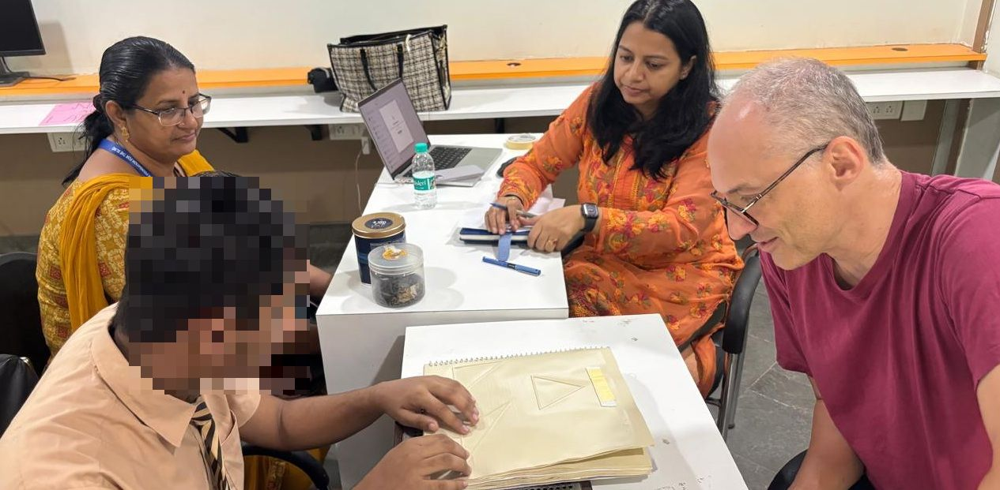
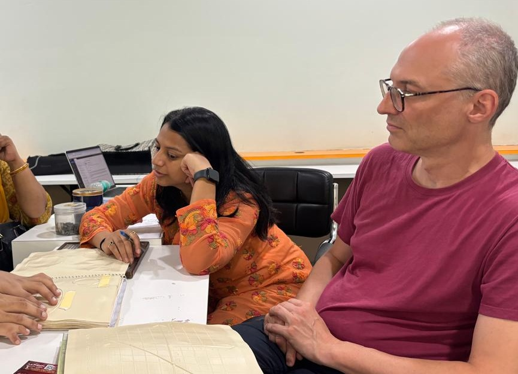

| David Austin | Neha Jadhav | Alexei Kolesnikov | Jason Siefken | Volker Sorge |
|---|---|---|---|---|
| Grand Valley State University | Progressive Accessibility Solutions | Towson University | University of Toronto | University of Birmingham |
Mathematical diagrams are central to communication in STEM.
There is considerable work to support reading diagrams, but little support for authoring diagrams.
PreFigure is an authoring system that prioritizes the creation of accessible diagrams by all authors.
PreFigure diagrams can be authored inside the PreTeXt authoring system for an accessible workflow.
An author writes a high-level description of the diagram.
One description, many outputs:
annotated SVG for the web,
PDF for print,
tactile embossing.
Semantic markup: high-level descriptions encourage authors to focus on the ideas they wish to express.
| Key | Action |
|---|---|
| Enter, A | Activate keyboard driven exploration |
| B | Activate menu driven exploration |
| Escape | Leave exploration mode |
| Cursor down | Explore next lower level |
| Cursor up | Explore next upper level |
| Cursor right | Explore next element on level |
| Cursor left | Explore previous element on level |
| X | Toggle expert mode |
| W | Extra details if available |
| Space | Repeat speech |
| M | Activate step magnification |
| Comma | Activate direct magnification |
| N | Deactivate magnification |
| Z | Toggle subtitles |
| C | Cycle contrast settings |
| T | Monochrome colours |
| L | Toggle language (if available) |
| K | Kill current sound |
| Y | Stop sound output |
| O | Start and stop sonification |
| P | Repeat sonification output |
diagcess library created by Volker SorgeAn online environment for authoring and exploring PreFigure diagrams.
Available at https://gvsu.edu/s/35f.


| Key | Action |
|---|---|
| Enter, A | Activate keyboard driven exploration |
| B | Activate menu driven exploration |
| Escape | Leave exploration mode |
| Cursor down | Explore next lower level |
| Cursor up | Explore next upper level |
| Cursor right | Explore next element on level |
| Cursor left | Explore previous element on level |
| X | Toggle expert mode |
| W | Extra details if available |
| Space | Repeat speech |
| M | Activate step magnification |
| Comma | Activate direct magnification |
| N | Deactivate magnification |
| Z | Toggle subtitles |
| C | Cycle contrast settings |
| T | Monochrome colours |
| L | Toggle language (if available) |
| K | Kill current sound |
| Y | Stop sound output |
| O | Start and stop sonification |
| P | Repeat sonification output |
Design lessons for accessible-diagram tools:
Accessibility must support creation, not only consumption. Computer-based exploration complements tactile materials; it does not replace them. Next: refine the Playground, and test authoring by VI users.
Thanks to the Devnar School for the Blind and Dr. Saibaba Goud; the Raised Line Foundation; and NSF DUE-2334768.